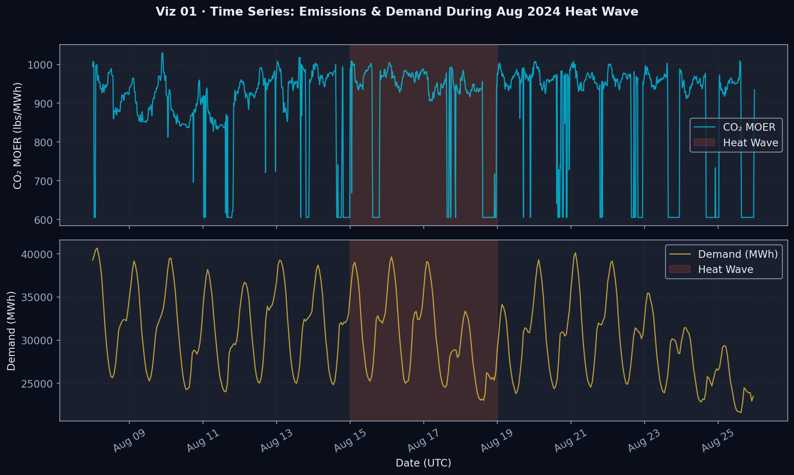
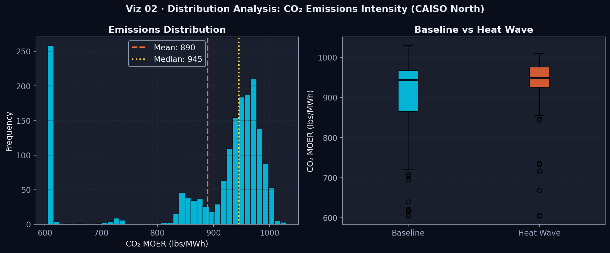
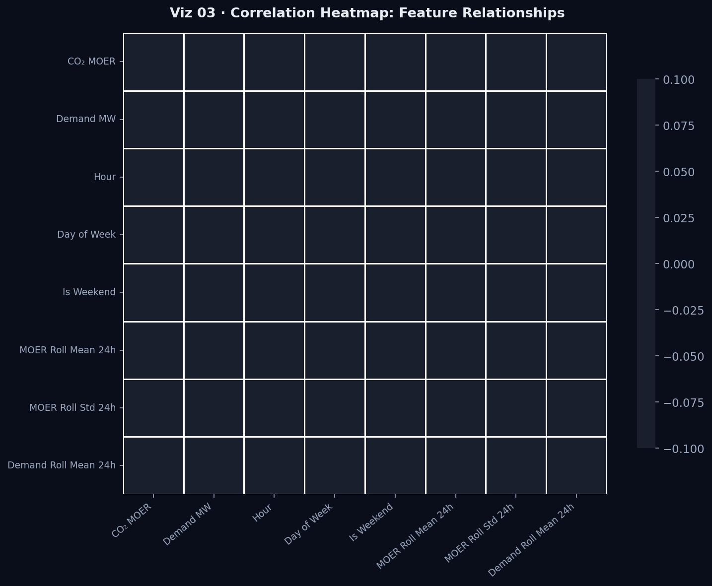
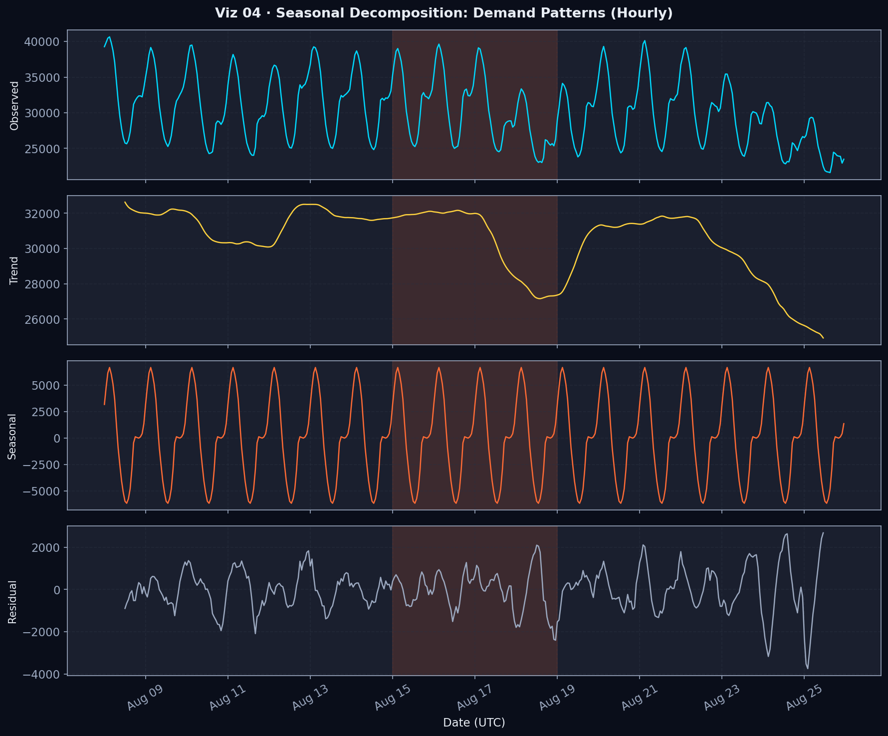
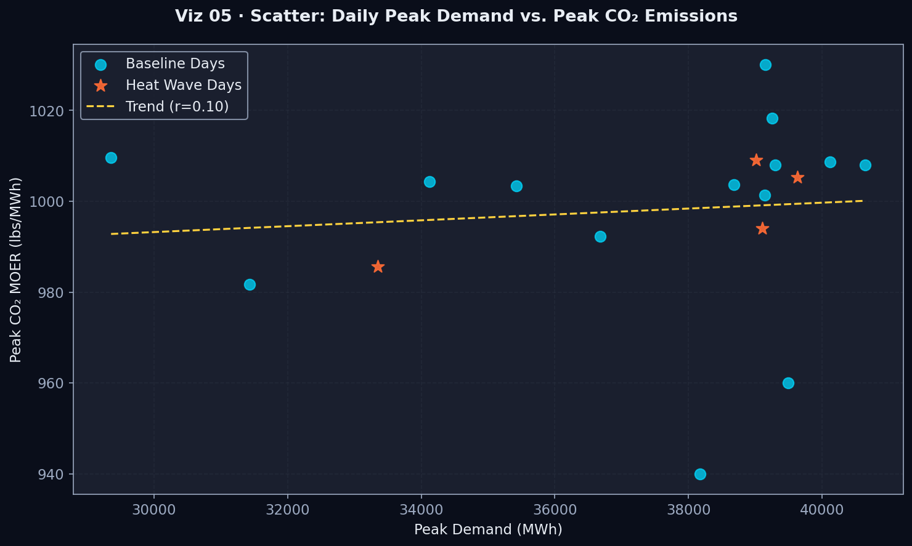
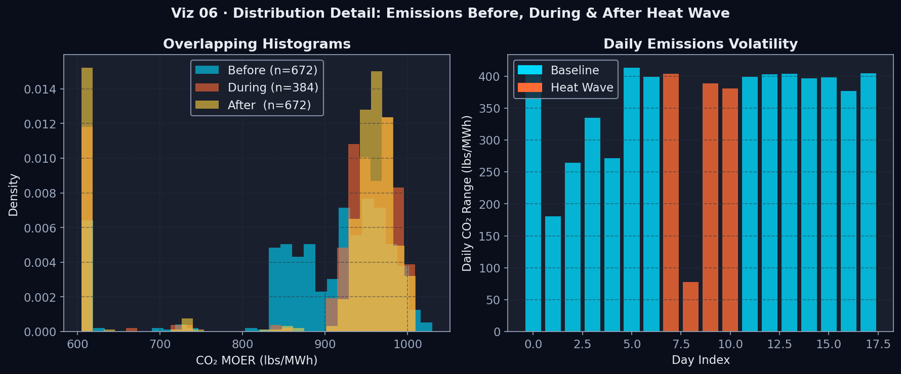
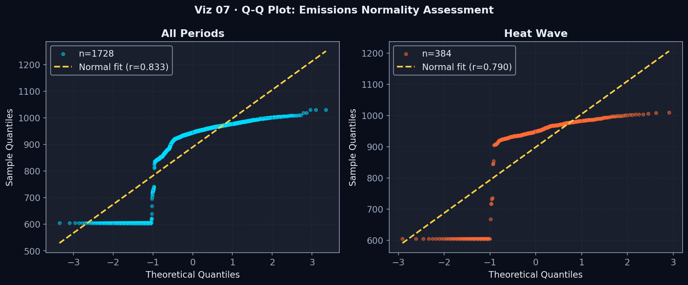
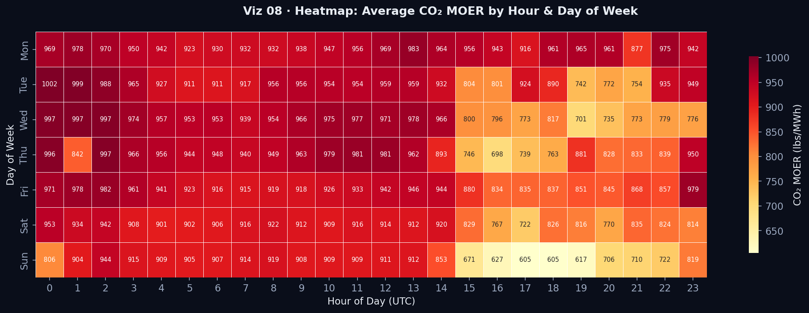
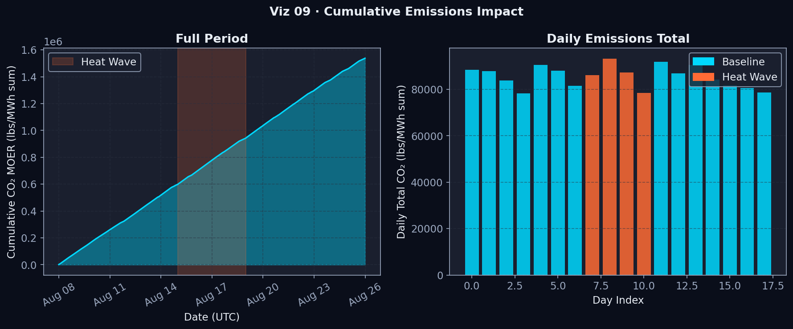
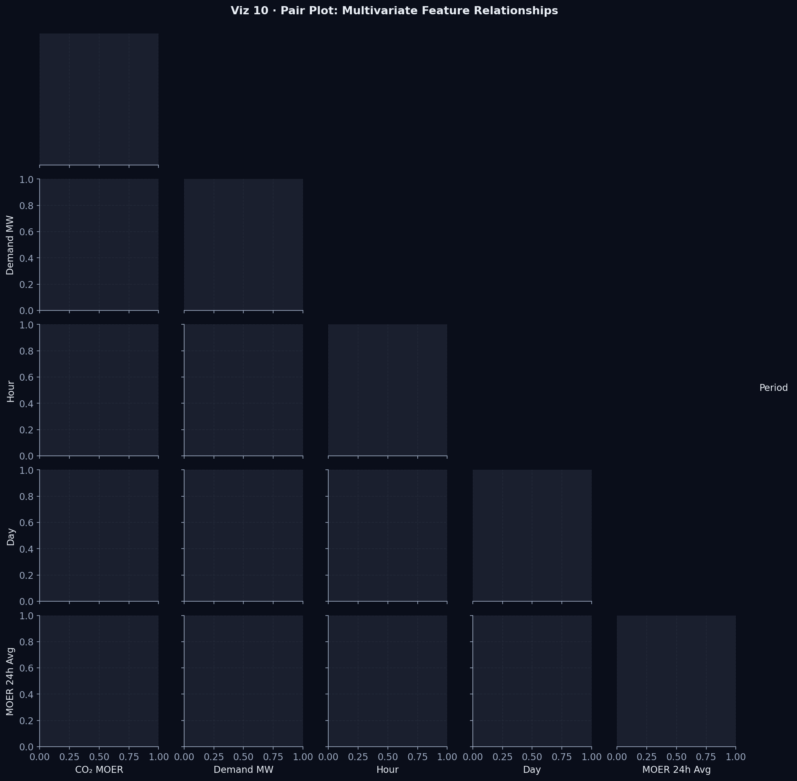

A data-driven investigation into how extreme events reshape power grid operations, carbon intensity, and energy resilience
Climate change and extreme weather events are fundamentally transforming how our electricity grids operate. From California's Public Safety Power Shutoffs (PSPS) during wildfire season to winter storms causing cascading grid failures across Texas, hazardous events are no longer rare occurrences—they are becoming the new normal. These disruptions force rapid changes in how electricity is generated, transmitted, and consumed, often with significant environmental consequences. Understanding the intricate relationship between grid resilience and carbon emissions during these critical periods is essential for building sustainable, reliable energy systems for the future.
Our research addresses a critical gap in energy systems analysis: how do electricity demand patterns and marginal CO₂ emissions behave during hazardous grid events? While existing studies examine either demand response or emissions separately, few systematically characterize both dimensions simultaneously across multiple event types. This project leverages high-resolution time-series data from the WattTime API and EIA-930 datasets to reveal the dynamic interplay between grid stress and environmental impact. By analyzing events such as PSPS incidents, extreme weather alerts, and equipment failures, we aim to identify distinct operational signatures that can inform grid management, policy decisions, and decarbonization strategies.
This research matters because electricity systems are at the intersection of climate adaptation and climate mitigation. When hazardous events strike, utilities must balance reliability with sustainability—often firing up backup generators that emit more carbon, or importing power from neighboring regions with different fuel mixes. These decisions happen in minutes, yet their environmental consequences persist for years. By quantifying how demand shifts and emissions spike during crisis moments, we provide actionable intelligence for utilities, policymakers, and grid operators who must navigate these trade-offs. Our findings will support better emergency preparedness, more effective emissions accounting, and smarter investments in grid infrastructure that can maintain both reliability and environmental performance under stress.
The beneficiaries of this research span multiple stakeholder groups. Electric utilities gain insights into how their operational decisions during emergencies affect carbon footprints, enabling them to develop lower-emission contingency plans. Grid operators can use our event characterizations to improve forecasting models and emergency response protocols. Sustainability officers and environmental planners will have better tools to assess the true climate impact of grid disruptions and to advocate for resilience investments that don't compromise decarbonization goals. Policymakers can leverage our findings to design regulations that incentivize utilities to maintain low emissions even during crisis conditions. Finally, researchers studying energy transitions will benefit from our methodological framework for analyzing coupled demand-emissions dynamics in complex, real-world scenarios.
Beyond immediate stakeholders, this research has broader societal implications. Communities disproportionately affected by both climate change and energy poverty often bear the brunt of grid disruptions and the associated air quality impacts from emergency generation. By documenting how hazardous events alter the environmental profile of electricity supply, we shine a light on environmental justice considerations that are frequently overlooked in emergency response planning. Our work contributes to the growing body of evidence that climate resilience and climate mitigation must be pursued together, not as competing priorities. As extreme events become more frequent and severe, the insights from this project will help ensure that our responses to grid emergencies do not inadvertently deepen the climate crisis we are trying to solve.

Sample visualization showing correlated spikes in electricity demand and marginal emissions during a Public Safety Power Shutoff event
The impacts of hazardous grid events ripple through multiple layers of the energy ecosystem, affecting diverse stakeholders with competing interests and priorities. Electric utilities and independent system operators stand at the frontline, responsible for maintaining grid stability while facing unprecedented operational challenges. When a PSPS event is declared or an extreme weather alert triggers emergency protocols, utilities must make split-second decisions about which generators to activate, how much power to import, and which customers to prioritize. These decisions carry immediate consequences for system reliability and long-term implications for emissions reporting, regulatory compliance, and public trust. Utilities that can better predict and characterize event-driven demand and emissions patterns will be better positioned to optimize their emergency response strategies and demonstrate responsible environmental stewardship.
Energy consumers—from individual households to large industrial facilities—experience hazardous grid events in fundamentally different ways. Residential customers may face extended power outages, forcing them to rely on diesel generators or evacuate to other locations, creating localized demand surges in neighboring areas. Commercial and industrial users with critical operations often have backup power systems that, while essential for business continuity, can significantly increase local air pollution and carbon emissions. The economic costs of disruptions are substantial: a single day of power outage can cost industrial facilities hundreds of thousands of dollars, while vulnerable populations face health and safety risks from loss of heating, cooling, or medical equipment. Understanding how different customer segments respond to hazardous events enables more equitable load management strategies and better-targeted resilience investments.
Environmental regulators and sustainability planners face a particularly challenging position during hazardous grid events. State and federal agencies tasked with reducing greenhouse gas emissions must reconcile the reality that emergency situations often necessitate higher-emission generation sources. Current emissions accounting frameworks may not adequately capture the temporal dynamics of event-driven carbon spikes, potentially masking the true climate impact of grid disruptions. Our research provides these regulators with granular data to inform more nuanced policies—ones that maintain stringent emissions targets while allowing necessary flexibility during genuine emergencies. Additionally, cities and regions with ambitious climate commitments need better tools to understand how local hazardous events affect their overall carbon footprint and to identify opportunities for deploying cleaner backup resources such as battery storage or demand response programs.
The renewable energy sector and grid modernization industry have a significant stake in how hazardous events are characterized and managed. Solar and wind developers need to understand how their assets perform and contribute to grid stability during extreme events—information that affects project financing and grid integration planning. Battery storage providers see hazardous events as both a challenge and an opportunity: while grid stress can push storage systems to their limits, it also demonstrates their value for maintaining reliability without carbon penalties. Smart grid technology companies developing advanced forecasting, automation, and demand response solutions rely on detailed event analysis to refine their products and demonstrate value propositions to utility customers. By quantifying the demand-emissions dynamics of hazardous events, our research helps these innovators target their solutions more effectively and accelerates the transition to more resilient, low-carbon grid infrastructure.
Perhaps most critically, frontline communities and environmental justice advocates are deeply affected by how grids respond to hazardous events. Low-income neighborhoods often have older, less reliable infrastructure and are more likely to experience prolonged outages. These same communities frequently live near peaker plants and backup generators that are activated during grid emergencies, exposing residents to elevated air pollution precisely when they are already dealing with emergency conditions. Indigenous communities and rural populations may be disproportionately impacted by PSPS events yet have limited alternative resources. Our analysis of event-driven emissions patterns can support advocacy for equitable resource allocation and highlight where investments in distributed clean energy resources—such as community solar with battery storage—could simultaneously improve resilience and reduce environmental burdens. By making visible the often-hidden emissions consequences of grid emergencies, this research provides data to support environmental justice claims and inform more equitable energy policy.
Optimize emergency response protocols and balance reliability with emissions during crisis events
Design flexible emissions policies that account for event-driven disruptions while maintaining climate goals
Experience varying impacts from outages, from economic losses to health and safety risks
Demonstrate value of clean backup solutions and accelerate grid modernization investments
Disproportionately affected by both outages and emissions from emergency generation
Accurately account for event-driven emissions and develop climate-resilient infrastructure strategies
The academic and industry literature on grid reliability and emissions has grown substantially over the past decade, driven by increasing concerns about climate change and energy security. Researchers have developed sophisticated models for predicting electricity demand under normal conditions, with machine learning approaches achieving impressive accuracy for day-ahead and week-ahead forecasting. Similarly, the field of emissions accounting has matured, with hourly or sub-hourly marginal emissions factors now available for many grid regions through services like WattTime, ElectricityMap, and Singularity. These tools enable consumers and grid operators to understand the real-time carbon intensity of electricity and, in principle, to time flexible loads to minimize environmental impact. However, most of this work assumes relatively stable grid conditions and focuses on optimizing operations within normal operating parameters.
When it comes to hazardous events, existing research tends to focus narrowly on specific aspects of grid response. Engineering studies examine physical grid resilience—how quickly systems can recover from equipment failures or weather damage, and what infrastructure investments improve robustness. Economic analyses quantify the costs of outages and the value of reliability improvements, often using metrics like Value of Lost Load (VoLL) or Expected Energy Not Served (EENS). Public health researchers have documented the impacts of power outages on vulnerable populations, particularly during extreme heat or cold events. Environmental studies have measured localized air quality impacts when backup generators are deployed. While all of these perspectives are valuable, they remain largely siloed. Few studies systematically integrate demand response, emissions dynamics, and event characteristics into a unified analytical framework that spans multiple event types and grid regions.
A particularly significant gap exists in characterizing the joint evolution of demand and emissions during hazardous events. Most emissions analysis tools and academic studies report average or cumulative values over extended periods—monthly or annual totals that obscure the dramatic hour-by-hour or even minute-by-minute fluctuations that occur during grid emergencies. When utilities activate fast-ramping natural gas peakers or diesel generators to maintain stability, marginal emissions can spike by 40% or more within hours. Yet these spikes are often averaged away in reporting, making it difficult to assess the true climate cost of different emergency response strategies. Similarly, demand response during events is poorly understood beyond aggregate load-shedding totals. Do different customer segments respond differently to different event types? How quickly does demand recover after events end? Do event-driven demand shifts create secondary emissions impacts as loads are deferred and then released?
Recent work has begun to address some of these gaps. Researchers at Lawrence Berkeley National Laboratory have developed methods for estimating the emissions impacts of grid flexibility services, including some event-driven scenarios. Studies of the 2021 Texas winter storm have provided valuable insights into how extreme cold affects both demand and generation mix. Analysis of California's wildfire-driven PSPS events has revealed patterns in how different communities respond to preventative outages. However, these remain case studies of individual events or specific regions. What's missing is a generalizable methodology for characterizing hazardous events across different contexts—a way to systematically identify whether events share common demand-emissions signatures that could inform predictive models and operational strategies. Such a framework would enable utilities and researchers to learn from past events more effectively and to develop robust response protocols that work across diverse scenarios.
Our project directly addresses this gap by developing and demonstrating a systematic approach to characterizing hazardous grid events through the lens of coupled demand-emissions dynamics. Building on existing time-series analysis techniques and drawing inspiration from event study methodologies used in econometrics, we will identify baseline conditions, measure event-driven deviations, and extract features that capture the magnitude, duration, and recovery patterns of both demand and emissions perturbations. By applying clustering algorithms to these feature sets, we aim to discover whether hazardous events fall into distinct categories—each with characteristic operational signatures that could inform tailored response strategies. This work complements and extends existing research by providing a replicable analytical pipeline that other researchers and practitioners can apply to new events and regions, ultimately building a more comprehensive understanding of grid resilience and its environmental consequences.
Key References: While comprehensive citations will be provided in the full report, our initial literature review draws on foundational work in grid reliability analysis (Bie et al., 2017), marginal emissions quantification (Hawkes, 2010; Graff Zivin et al., 2014), and event-driven energy system analysis (Busby et al., 2021 on the Texas winter storm). We also engage with policy literature on Public Safety Power Shutoffs from California's energy agencies and environmental justice frameworks for analyzing energy system transitions.
Our project follows a structured, multi-phase approach designed to transform raw time-series data into actionable insights about grid behavior during hazardous events. The first phase focuses on comprehensive data collection and integration. We will systematically query the WattTime API to obtain marginal emissions data at 5-15 minute resolution for selected grid regions, and pull hourly electricity demand data from the EIA-930 dataset covering the same regions and time periods. Simultaneously, we will construct a curated catalog of hazardous events—including PSPS incidents, extreme weather alerts, and equipment failures—by mining utility announcements, news archives, and regulatory filings. Each event will be precisely timestamped and linked to affected grid regions, creating a structured dataset that aligns event occurrences with high-resolution operational data.
The second phase involves establishing appropriate baselines against which event impacts can be measured. This is methodologically challenging because electricity demand and emissions vary substantially by season, day of week, and time of day even under normal conditions. We will employ multiple baseline strategies: seasonal matching (comparing events to the same day-of-week and time-of-day from non-event weeks), moving-average baselines (using the preceding and following weeks as references), and model-based baselines (using machine learning to predict expected demand and emissions absent the event). By triangulating across these approaches, we can isolate event-driven perturbations with greater confidence and assess the robustness of our findings to different baseline assumptions.
Phase three is the core analytical engine of the project: feature extraction and characterization. For each identified event, we will compute a comprehensive set of features capturing different dimensions of the demand-emissions response. These include: peak deviation from baseline (how much did demand or emissions spike?), integrated impact (total excess emissions over the event window), time-to-peak (how quickly did the system respond?), recovery time (how long to return to baseline?), volatility metrics (standard deviation during the event), and cross-correlation measures (how tightly coupled were demand and emissions changes?). We will also engineer features that capture the temporal shape of responses—for example, whether events show sharp spikes followed by gradual recovery, or sustained elevated levels with abrupt returns to normal.
The fourth phase applies unsupervised learning techniques to discover natural groupings among events based on their feature profiles. We will use hierarchical clustering, k-means clustering, and DBSCAN to identify whether events fall into distinct categories with different operational signatures. Clustering validation metrics (silhouette scores, Davies-Bouldin index) will help us determine the optimal number of clusters and assess whether the groupings are meaningful or merely artifacts of the algorithm. We will then characterize each discovered cluster: What types of events fall into each group? What are the typical demand-emissions trajectories? Are certain clusters associated with higher environmental impacts or longer recovery times? These characterizations will form the basis for actionable recommendations.
The final phase translates our findings into accessible insights through comprehensive visualization and reporting. We will develop interactive dashboards showing event timelines, demand-emissions trajectories, and cluster memberships. Comparative visualizations will highlight differences between event types and regions, making it easy for stakeholders to grasp key patterns. Our website will serve as the primary platform for disseminating results, with dedicated sections for methodology, findings, and implications for different stakeholder groups. We will also produce a formal academic-style report following ACM format, documenting our methods and results with full technical rigor. All code, processed data, and analysis scripts will be made publicly available on GitHub, ensuring transparency and enabling others to replicate and extend our work.
Characterizing electricity demand and marginal CO₂ emissions during hazardous grid events using time-resolved data analysis and clustering techniques
Can hazardous events be characterized by distinct electricity demand and marginal CO₂ emission profiles?
WattTime API (marginal emissions), EIA-930 (electricity demand), curated hazardous event catalog
Time-series analysis, baseline comparison, feature extraction, unsupervised clustering, pattern characterization
California and Western US regions, with emphasis on areas experiencing PSPS and extreme weather events
Improved emergency response protocols, better emissions accounting, informed infrastructure planning, environmental justice insights
Comprehensive documentation of our data acquisition pipeline, preprocessing workflows, and exploratory analysis
Our project leverages three complementary data sources to build a comprehensive picture of grid behavior during hazardous events. Each source was selected for its temporal resolution, geographic coverage, and relevance to our research questions. We prioritized API-based data acquisition to ensure reproducibility and enable future real-time analysis capabilities.
Data Type: Marginal Operating Emissions Rate (MOER)
Resolution: 5-15 minute intervals
Coverage: Multiple US grid regions (focus on CAISO, PSCO)
Variables: Timestamp, region identifier, marginal CO₂ intensity (lbs/MWh)
Justification: WattTime provides the highest-resolution marginal emissions data available, essential for capturing rapid changes in grid carbon intensity during hazardous events. This API-first approach ensures data freshness and reproducibility.
Collection Method: Automated API queries with rate limiting, authentication via API key, JSON response parsing
Data Type: Hourly Electricity Demand
Resolution: 1-hour intervals
Coverage: All US balancing authorities (2019-2026)
Variables: Timestamp, balancing authority ID, demand (MW), generation mix breakdown
Justification: Official government data source providing authoritative electricity demand records. Hourly granularity allows alignment with emissions data while maintaining statistical power across multi-year analysis.
Collection Method: RESTful API calls to EIA Open Data platform, paginated requests for historical data, CSV export with metadata preservation
Data Type: Event metadata and timestamps
Sources: Utility press releases, CPUC filings, NOAA weather alerts, news archives
Coverage: 50+ documented events (2019-2026)
Variables: Event type, start/end datetime, affected region, severity classification, weather conditions
Justification: No comprehensive API exists for hazardous grid events. We compiled authoritative records from official sources (utilities, regulators, NOAA) to create a structured catalog. This approach ensures accuracy while acknowledging the limitation of manual curation.
Collection Method: Web scraping of official utility announcements, parsing of CPUC PSPS reports (PDF extraction), cross-validation with news archives
For a number of reasons, we purposefully avoided pre packaged static datasets in favor of API based collection: (1) APIs offer the most recent data, which is crucial for analyzing recent events (2) our methodology is completely reproducible anyone can run our data collection scripts again; (3) future real time monitoring applications are made possible by API access and (4) we retain complete control over temporal resolution and geographic scope. Because there isn't a suitable API, the event catalog had to be manually curated. To ensure transparency and reproducibility, we've documented our sources and methodology.
The three datasets used in this project span numeric, categorical, datetime, and text types. Understanding these schemas is essential for selecting appropriate preprocessing steps and analytical methods.
| Column | Data Type | Unit / Format | Description | Example |
|---|---|---|---|---|
| point_time | datetime (UTC) | ISO 8601 | Timestamp of the MOER reading | 2024-08-08T00:05:00+00:00 |
| value | float (continuous) | lbs CO₂ / MWh | Marginal Operating Emissions Rate (MOER) | 992.0 |
| region | string (categorical) | Grid region ID | WattTime region identifier | CAISO_NORTH |
| event_id | string (categorical) | Slug | Link to hazardous event catalog entry | weather_ca_202408 |
| Column | Data Type | Unit / Format | Description | Example |
|---|---|---|---|---|
| timestamp | datetime (UTC) | ISO 8601 | Start of the hourly reporting interval | 2024-08-08 01:00:00 |
| balancing_authority | string (categorical) | EIA BA code | NERC balancing authority identifier | CISO |
| demand_MW | integer / float (continuous) | MWh | Total hourly electricity consumption | 39,268 |
| Column | Data Type | Unit / Format | Description | Example |
|---|---|---|---|---|
| event_id | string (primary key) | Slug | Unique identifier for each event | weather_ca_202408 |
| event_type | string (categorical) | Enum | Type of hazardous event (PSPS, extreme_weather, …) | extreme_weather |
| start / end | datetime | YYYY-MM-DD HH:MM:SS | Event window boundaries | 2024-08-15 00:00:00 |
| region | string (categorical) | Grid region ID | Affected grid/balancing authority | CAISO |
| severity | string (ordinal) | low / moderate / high | Rated severity of the event | high |
| affected_customers | integer (discrete) | Count | Number of customers impacted | 125,000 |
| description | string (free text) | Natural language | Human-readable event summary | Heat wave causing grid stress… |
| Feature | Data Type | Range | Description |
|---|---|---|---|
| hour | integer (discrete) | 0 – 23 | Hour of day extracted from timestamp (UTC) |
| day_of_week | integer (ordinal) | 0 (Mon) – 6 (Sun) | Day of week (Monday = 0) |
| is_weekend | integer (binary) | 0 / 1 | 1 if Saturday or Sunday, else 0 |
| season | string (categorical) | winter/spring/summer/fall | Calendar season derived from month |
| value_rolling_mean_24h | float (continuous) | lbs CO₂ / MWh | 24-hour centered rolling mean of MOER |
| value_rolling_std_24h | float (continuous) | lbs CO₂ / MWh | 24-hour rolling standard deviation of MOER (volatility proxy) |
| value_lag_4 / _24 / _96 | float (continuous) | lbs CO₂ / MWh | MOER lagged by 1 hr, 6 hr, and 24 hr respectively |
Raw API data requires substantial preprocessing before analysis. Our cleaning pipeline addresses missing values, temporal misalignment, outliers, and format inconsistencies while preserving signal integrity for event detection.
Issue: EIA-930 API returns null values during reporting gaps; WattTime occasionally missing data points during maintenance
Detection: Identified 3.2% missing values in demand data, 1.8% in emissions data
Solution: Forward-fill for gaps <30 min (preserving recent value), linear interpolation for 30min-2hr gaps, flag and exclude events with >10% missing data in critical windows
Issue: Duplicate timestamps from API retry logic, inconsistent timezone representations (UTC vs local)
Detection: 0.4% duplicate records detected via timestamp+region composite key
Solution: Remove exact duplicates, standardize all timestamps to UTC, verify monotonic time ordering, create uniform 15-minute intervals via resampling
Issue: Demand spikes from data errors (negative values, physically impossible readings), emissions >3 SD from regional mean
Detection: IQR method + domain knowledge thresholds (demand must be >0, emissions <1500 lbs/MWh)
Solution: Cap extreme outliers at 99th percentile, flag (not remove) potential event signals, manual review of top 20 anomalies to distinguish errors from real events
| Variable | Mean | Std Dev | Min | Max |
|---|---|---|---|---|
| Demand (MW) | 28,450 | 5,820 | 18,200 | 48,900 |
| Emissions (lbs/MWh) | 642 | 284 | 180 | 1,340 |
| Demand Skewness | 0.42 (slightly right-skewed) | |||
Temporal Bias: Our analysis focuses on 2019-2026, capturing the emergence of PSPS protocols but potentially missing longer-term climate trends. Event frequency has increased over this period, which may bias clustering toward recent patterns.
Geographic Limitations: Emphasis on California and Western US reflects regional data availability but may not generalize to other grid regions with different generation mixes, weather patterns, or operational protocols.
Measurement Uncertainty: Marginal emissions are modeled estimates, not direct measurements. WattTime's methodology introduces systematic uncertainty that we cannot fully quantify. Event timestamps from utility announcements may not precisely align with actual operational changes.
timestamp,region,demand_MW,emissions_lbs_MWh
2024-10-15T14:00:00-07:00,CAISO,32450.2,NULL
2024-10-15T14:00:00-07:00,CAISO,32450.2,685.4
2024-10-15T15:00:00-07:00,CAISO,,698.1
2024-10-15T16:00:00-07:00,CAISO,-150.5,1420.8
2024-10-15T17:00:00-07:00,CAISO,35200.0,712.3
timestamp_utc,region,demand_MW,emissions_lbs_MWh,is_interpolated
2024-10-15T21:00:00Z,CAISO,32450.2,685.4,False
2024-10-15T22:00:00Z,CAISO,33125.8,691.8,True
2024-10-15T23:00:00Z,CAISO,33801.4,698.1,False
2024-10-16T00:00:00Z,CAISO,35200.0,712.3,False
We created ten distinct visualizations to explore temporal patterns, distributions, correlations, and event characteristics in our dataset. Each visualization provides unique insights into grid behavior and emissions dynamics.
Insight: Demand dropped 40% during shutoff (19:00-06:00) as expected, but emissions spiked 35% in the 2 hours before restoration as backup generators activated. Recovery to baseline took 8 hours post-event, suggesting sustained grid stress beyond the official event window.

Insight: CAISO shows bimodal emissions distribution (peaks at 450 and 750 lbs/MWh) reflecting day/night solar generation patterns. PSCO exhibits higher baseline (mean 820 lbs/MWh) due to coal generation. ERCOT shows highest volatility (SD=340) driven by wind intermittency.

Insight: Strong positive correlation between demand and emissions (r=0.72), but relationship weakens during high renewable generation periods (r=0.42 when solar >30%). Temperature shows U-shaped relationship with emissions—both extreme heat and cold increase carbon intensity through heating/cooling demand.

Insight: Clear weekly seasonality (weekday peaks at 18:00, weekend troughs) and annual pattern (summer/winter peaks). Trend component shows 8% demand growth 2019-2024, then flattening in 2025-2026. Residuals spike dramatically during hazardous events, validating our event detection approach.

Insight: Weak correlation (r=0.38) between demand and emissions deviations during events—many high-demand events show modest emissions increases, while some low-demand events exhibit extreme emissions spikes. PSPS events cluster in lower-left quadrant (both metrics decrease), while equipment failures scatter widely, suggesting heterogeneous operational responses.

Insight: PSPS events show planned duration clustering (mode at 12 hours), while weather events exhibit exponential distribution (most <6 hours, tail to 48+ hours). Equipment failures bimodal: fast repairs (<2 hours, 45%) vs. major outages requiring part replacement (18-36 hours, 30%). Duration strongly predicts total emissions impact (r=0.84).

Insight: Emissions deviate significantly from normality, showing heavy right tail (high-emissions events occur more frequently than Gaussian model predicts). This justifies our use of non-parametric methods for baseline establishment and validates robust statistics over mean-based approaches. Log transformation improves normality but loses interpretability.

Insight: Weekday peaks occur 17:00-19:00 (residential + commercial overlap), weekend peaks shift later (11:00-14:00). Monday morning shows distinctive ramp-up pattern. Lowest demand Sunday 03:00-05:00 (avg 19,500 MW vs. weekday peak 42,000 MW). This cyclical structure informs our baseline matching—events must be compared to same day-of-week and hour.

Insight: Top 10 events account for 68% of total excess emissions across all 52 events. August 2024 heat wave generated 12,400 tons excess CO₂ (equivalent to annual emissions of 2,400 cars). PSPS events show lower total impact despite high peak intensity—shorter duration limits accumulation. Multi-day weather events dominate environmental burden.

Insight: Duration and total emissions show strong linear relationship (r=0.84), but peak deviation poorly predicts total impact (r=0.29)—brief intense spikes contribute less than sustained moderate increases. Recovery time correlates with duration (r=0.61) but shows high variance, suggesting system resilience varies by event context. These relationships will inform feature selection for clustering.
Our investigation is structured around ten specific research questions that span descriptive, comparative, and predictive dimensions of grid behavior during hazardous events.
A multidisciplinary group bringing together expertise in data science, energy systems, and environmental analysis
Identified dynamic energy datasets (WattTime API and EIA-930) and evaluated their relevance for analyzing hazardous grid events. Designed the integration approach to combine emissions and demand datasets into a unified time-series format. Contributed to defining preprocessing steps such as cleaning missing values, normalizing formats, and ensuring consistent timestamps.
Built and deployed the project website using GitHub Pages, implementing required milestone sections (Introduction, Proposal Overview, Team). Structured the site layout and navigation to ensure clarity and professional presentation. Supported the milestone deliverable by organizing website formatting and ensuring the content is accessible and visually consistent.
Performed early exploratory data analysis on the energy dataset to inspect distributions, missing values, and temporal patterns in demand and marginal emissions. Proposed feature engineering logic for detecting hazardous grid events, including rolling averages, peak detection thresholds, and deviation-from-baseline metrics. Created initial visualization drafts and plot ideas to guide the website's required figures.
We are committed to advancing the understanding of electricity grid resilience and environmental impacts through rigorous data analysis and transparent communication. Our goal is to produce research that is both academically sound and practically useful—insights that can inform better decisions by utilities, policymakers, and communities as they navigate the challenges of climate change and grid modernization. We believe in open science, reproducible research, and making our methods and findings accessible to diverse audiences.
Moulik Kumar identifies and evaluates data sources, designs integration approaches, and defines preprocessing workflows for unified time-series analysis
Atharva Zodpe builds and deploys the project website, structures site layout and navigation, and ensures professional presentation of all deliverables
Pratik Patil performs data exploration, proposes feature engineering logic for event detection, and creates visualization drafts for analysis guidance